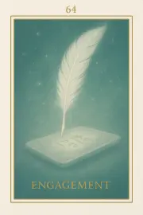

Famille 1 – Râ (Soleil)
Cette première famille de l’Oracle Sia est associée au Soleil et à Râ. Elle explore la lumière originelle, la conscience de soi, et l’élan de renaissance intérieure. Chaque carte agit comme une clé de résurrection, invitant à retrouver son identité profonde et à rayonner sa vérité.
Carte 1 – Lat
Mots-clés : Naissance de l’âme, Conscience pure, Vide originel, Perte d’identité
Chiffre caché : 91
Lecture inversée : 1 → 9
Planète principale : Soleil
Divinité principale : Râ
Planète secondaire : Soleil
Divinité secondaire : Râ
Interprétation de la carte 1 : Lat (droite)
Lecture intuitive rapide
Lat est l’instant zéro. L'âme vient de sortir du corps physique mais n’a encore rien vu, rien choisi, n’y compris. Un souffle nu, une conscience nue vient de naître du vide de l’incarnation. Pas encore d’émotion, pas encore de souvenir : juste la pure existence, sans direction, sans regard tourné.
1. Caractère de la personne
L'âme, nue et silencieuse, émerge sans passé ni futur. Elle est un souffle cosmique naissant, éveillé à l’absence de forme. Son premier état est la pure conscience d’être sans rien définir encore.
2. Plan affectif
Les attachements terrestres n’ont pas encore refait surface. L’âme est seule, mais cette solitude est naturelle : aucun regret, aucun lien, aucun désir. Juste l'existence à l’état pur.
5. Plan spirituel
Spirituellement, Lat est le premier frémissement de l’âme vers la lumière. C’est la présence sans intention, une pure étincelle surgie du vide. Râ veille en silence, éclairant l'âme sans qu’elle n'en ait encore conscience.
Carte 1 : Lat (inversée)
1. Caractère de la personne
L'âme reste figée, confuse. Elle ne reconnaît pas sa propre existence nouvelle et flotte dans un vide stérile. Elle risque de s'égarer dans l'oubli d'elle-même.
2. Plan affectif
L'absence de lien est vécue comme un vide effrayant. L’âme cherche instinctivement des attaches perdues au lieu d’accepter l'Être pur.
5. Plan spirituel
Lat inversé indique une difficulté à accepter la dissolution de l’ancien moi. L’âme résiste à l'éveil silencieux, tentant de s'accrocher à des fragments d’identité morte.
Résumé de la carte 1 : Lat
Lat est l’instant premier de la conscience après la mort. Ni action, ni pensée, seulement l’éveil pur de l’âme qui prend conscience d’exister sans repères.
À l’endroit, elle incarne la pure naissance cosmique.
À l’envers, elle indique la peur de perdre son ancien "je".
Carte 10 – Empreinte
Mots-clés : : Mémoire corporelle, Trace vibratoire, Attachements anciens, Retour sensoriel, Refus ou confusion de la matière
Chiffre caché : 82
lecture inversée : 2 → 8
Divinité principale : Râ
Planète secondaire : Terre
Divinité secondaire : Geb
Interprétation de la carte 10 : Empreinte (droite)
Lecture intuitive rapide
L’âme, tout juste sortie du silence originel, entre en contact avec la mémoire de la matière. Elle n’a pas encore de forme, mais elle perçoit la densité et les traces de ce qu’elle a été. Elle ressent la Terre comme un écho. Ses gestes passés, ses émotions, ses attachements : tout a laissé une empreinte vibratoire. Rien n’est encore compris, mais le corps, le monde, les sensations s’impriment doucement en elle.
1. Caractère de la personne
L’âme ressent encore les contours de sa dernière incarnation, comme une enveloppe douce, sans y être enfermée. Elle reconnaît sans s’identifier.
2. Plan affectif
Des sensations anciennes ressurgissent : des gestes familiers, des élans du cœur, des marques de tendresse ou de souffrance — sans histoire, mais avec intensité subtile.
5. Plan spirituel
L’âme touche à la mémoire de la matière, à ce qu’elle a incarné, et à la trace qu’elle a laissée sur Terre. La Terre répond encore, comme un écho.
Carte 10 : Empreinte (inversée)
1. Caractère de la personne
L’âme se confond avec ses anciennes formes, ou rejette la mémoire du corps. Elle s’accroche ou refuse la matière.
2. Plan affectif
Des attachements passés reviennent comme des fantômes. L’âme peut se replonger dans des sensations non digérées ou refuser ce qui a été ressenti.
5. Plan spirituel
Elle rejette la Terre ou ne veut pas sentir ce qu’elle a marqué. Le lien au monde reste bloqué ou déformé.
Résumé de la carte 10 : Empreinte
EMPREINTE marque l’entrée subtile dans la mémoire terrestre. C’est la trace encore chaude de l’incarnation, le souvenir corporel sans mental, l’écho de la vie passée dans la vibration de la matière.
À l’endroit, l’âme perçoit sans s’attacher.
À l’envers, elle rejette ou confond les traces.
Carte 19 – Exposition
Mots-clés : : Lumière révélatrice, Conscience nue, Responsabilité, Clarté intérieure, Résistance à la vérité
Chiffre caché : 100
lecture inversée : 0 → 0 → 1
Divinité principale : Râ
Planète secondaire : Jupiter
Divinité secondaire : Amon-Rê
Interprétation de la carte 19 : Exposition (droite)
Lecture intuitive rapide
L’âme se tient dans la lumière de Râ. Il ne parle pas. Il ne juge pas.Mais sa présence éclaire tout. Ce qu’elle porte, ce qu’elle a fait, ce qu’elle a été : tout est visible, sans mot, sans filtre. Ce n’est pas une question, c’est une lumière. Et cette lumière oblige l’âme à sentir sa responsabilité, sans explication, sans refuge. Ce n’est pas encore le jugement. Mais c’est le point où l’âme comprend qu’elle devra répondre.
1. Caractère de la personne
Personnalité L’âme ressent qu’elle est exposée. Elle comprend que sa lumière a des conséquences.
2. Plan affectif
Elle ne reçoit pas d’amour, ni de rejet. Elle sent juste la clarté nue d’être vue.
5. Plan spirituel
Râ éclaire sans dire un mot. Et cette lumière suffit à réveiller l’âme.
Carte 19 : Exposition (inversée)
1. Caractère de la personne
L’âme veut se cacher de la lumière. Elle refuse d’être vue telle qu’elle est.
2. Plan affectif
L’âme ressent l’exposition comme une blessure. Elle confond clarté et accusation.
5. Plan spirituel
L’âme fuit l’impact de la lumière divine. Elle tente de nier ce qui est pourtant déjà révélé.
Résumé de la carte 19 : Exposition
EXPOSITION est le moment où l’âme est touchée par la lumière de Râ. Aucune parole ne lui est adressée, mais elle sait : elle est visible. Cette clarté n’est pas un jugement, mais un appel à se reconnaître.
À l’endroit, elle accepte d’être vue.
À l’envers, elle résiste à la vérité qui se montre.
Carte 28 – Moi
Mots-clés : : Regard intérieur, Révélation de soi, Lumière sans jugement, Acceptation ou fuite, Clarté existentielle
Chiffre caché : 109
lecture inversée : 9 → 0 → 1
Divinité principale : Râ
Planète secondaire : Mars
Divinité secondaire : Sekhmet
Interprétation de la carte 28 : Moi (droite)
Lecture intuitive rapide
Râ éclaire. Pas pour juger. Mais pour montrer. L’âme est seule face à elle-même. Il n’y a rien à dire. Ce qu’elle est devenue se voit. Et c’est là, maintenant, que quelque chose peut commencer à changer. Mais il faut d’abord regarder. Ce n’est pas un miroir. C’est une mise en lumière. Brutale pour qui a fui. Lumineuse pour qui accepte. Râ ne commente pas. Il attend une réponse silencieuse : celle de l’âme qui se reconnaît.
1. Caractère de la personne
L’âme se regarde. Elle voit ce qu’elle a été, sans fard, sans détour.
2. Plan affectif
L’âme sent ce qu’elle a fait d’elle-même dans ses relations. Elle ne juge pas, elle observe.
5. Plan spirituel
Râ éclaire son être. L’âme voit son moi tel qu’il est devenu. Et cette clarté est un appel.
Carte 28 : Moi (inversée)
1. Caractère de la personne
L’âme détourne le regard. Elle ne veut pas voir ce qu’elle est devenue.
2. Plan affectif
L’âme rejette ce qu’elle ressent. Elle ne veut pas reconnaître ses blessures ou ses responsabilités.
5. Plan spirituel
L’âme refuse la lumière. Elle préfère l’ombre douce à la vérité nue.
Résumé de la carte 28 : Moi
MOI est le moment où l’âme se regarde dans la lumière de Râ. Pas pour se juger, mais pour voir ce qu’elle est. C’est un regard nu, entier, irréversible.
À l’endroit, elle accepte.
À l’envers, elle fuit.
Carte 37 – Voile
Mots-clés : : Observation subtile, Résidu intérieur, Clarté incomplète, Voile de conscience, Tension non résolue
Chiffre caché : 118
lecture inversée : 8 → 1 → 1
Divinité principale : Râ
Planète secondaire : Mercure
Divinité secondaire : Thot
Interprétation de la carte 37 : Voile (droite)
Lecture intuitive rapide
Tout est presque clair. Presque. L’âme avance dans la lumière, mais quelque chose en elle flotte encore entre deux niveaux. Un doute léger, un mécanisme intérieur, un petit repli qui ne résiste pas… mais qui existe. Ce n’est pas une ombre. Ce n’est plus un mensonge. C’est un voile. Une fine couche posée entre l’âme et sa vérité pleine. Râ éclaire sans forcer. Thot écoute sans noter. Il s’agit ici d’observer ce qui reste actif dans l’âme, sans l’avoir vu jusque-là, et sans le condamner. Le voile n’est pas là pour cacher. Il est là pour être soulevé.
1. Caractère de la personne
L’âme sent qu’un mouvement reste en elle, à peine visible. Elle ne juge pas : elle observe.
2. Plan affectif
Un lien, un geste, un souvenir agissent encore. L’âme l’accueille sans le réactiver.
5. Plan spirituel
La lumière est presque pleine. Mais un voile demeure. L’âme choisit de le traverser, doucement.
Carte 37 : Voile (inversée)
1. Caractère de la personne
L’âme nie le voile. Elle croit être claire, mais refuse d’entrer dans la subtilité.
2. Plan affectif
L’âme rejette l’effet d’un lien passé. Mais ce déni nourrit la tension.
5. Plan spirituel
L’âme veut aller plus vite. Elle refuse de voir ce qui l’adoucit… ou la freine.
Résumé de la carte 37 : Voile
VOILE est le moment où l’âme, presque totalement éclairée, devine encore une couche entre elle et sa vérité nue. Ce n’est plus une fuite. C’est une observation fine.
À l’endroit, elle traverse.
À l’envers, elle se précipite ou nie.
Carte 46 – Contradiction
Mots-clés : : Dissonance intérieure, Vérité sans jugement, Incohérence révélée, Alignement en devenir, Reconnaissance lucide
Chiffre caché : 127
lecture inversée : 7 → 2 → 1
Divinité principale : Râ
Planète secondaire : Vénus
Divinité secondaire : Hathor
Interprétation de la carte 46 : Contradiction (droite)
Lecture intuitive rapide
L’âme voit une incohérence. Entre ce qu’elle a dit, et ce qu’elle a vibré. Entre son intention affichée, et le résultat réel. Ce n’est pas une erreur. Ce n’est pas une faute. C’est une contradiction. Râ éclaire sans détour. Hathor adoucit ce qu’elle montre. L’âme ne peut pas fuir ce reflet. Elle ne juge pas. Elle reconnaît. Quelque chose en elle voulait bien faire, mais une autre part agissait autrement. C’est ici que commence l’intégrité. Par la reconnaissance de l’écart. La vérité ne condamne pas. Mais elle tranche ce qui ne tient plus.1. Caractère de la personne
L’âme reconnaît une contradiction dans ce qu’elle a cru être. Elle accepte de ne plus se raconter d’histoires.
2. Plan affectif
L’âme voit qu’elle a dit aimer, mais agi autrement. Ou qu’elle a aimé avec peur, attente ou déni.
5. Plan spirituel
L’âme éclaire ce qui, en elle, s’opposait silencieusement à sa propre lumière.
Carte 46 : Contradiction (inversée)
1. Caractère de la personne
L’âme résiste encore à voir ses contradictions. Elle maintient une image, mais le fond vibre autrement.
2. Plan affectif
L’âme reste en décalage entre ce qu’elle croit ressentir et ce qu’elle projette.
5. Plan spirituel
L’âme se divise intérieurement, croyant suivre la lumière tout en fuyant l’ajustement.
Résumé de la carte 46 : Contradiction
CONTRADICTION est le moment où l’âme voit que tout ne vibrait pas à l’unisson. Elle ne juge pas, mais elle met en lumière.
À l’endroit, elle reconnaît.
À l’envers, elle s’aveugle — un peu encore.
Carte 55 – Clarté
Mots-clés : : Lumière intérieure, Discernement spirituel, Vérité sans masque, Image versus essence
Chiffre caché : 136
lecture inversée : 6 → 3 → 1
Divinité principale : Râ
Planète secondaire : Saturne
Divinité secondaire : Osiris
Interprétation de la carte 55 : Clarté (droite)
Lecture intuitive rapide
L’âme est éclairée. Pas par un jugement, mais par une lumière nue. Elle voit ce qu’elle a porté, ce qu’elle a voulu incarner, ce qu’elle a proclamé juste. Râ ne juge pas. Il éclaire. Osiris ne condamne pas. Il pèse l’origine. L’âme voit alors ce qui vibrait vraiment, et ce qui n’était qu’un reflet doré. Ce n’est pas un échec. C’est une clarté d’âme. Ce qui tient, tient. Ce qui se dissout, n’avait pas de fond.
1. Caractère de la personne
L’âme voit ce qu’elle a affirmé comme juste. Elle distingue la vérité de l’image.
2. Plan affectif
L’âme reconnaît ce qu’elle a offert depuis la clarté… et ce qu’elle attendait en retour.
5. Plan spirituel
L’âme regarde si sa lumière venait du cœur ou d’un besoin. Elle laisse tomber ce qui ne vibre pas.
Carte 55 : Clarté (inversée)
1. Caractère de la personne
L’âme veut encore croire à son image. Elle refuse la clarté qui la démasque.
2. Plan affectif
L’âme confond don et attente. La lumière devient justification.
5. Plan spirituel
L’âme tient à un rôle lumineux, mais fuit le regard profond d’Osiris.
Résumé de la carte 55 : Clarté
CLARTÉ est le moment où l’âme voit sa lumière sans filtre.
À l’endroit, elle distingue l’essence du reflet.
À l’envers, elle s’accroche à l’image.
Carte 64 – Engagement
Mots-clés : : Fidélité à soi, Feu originel, Pesée vibratoire, Alignement d’âme, Vérité incarnée
Chiffre caché : 145
lecture inversée : 5 → 4 → 1
Divinité principale : Râ
Planète secondaire : Uranus
Divinité secondaire : Maât
Interprétation de la carte 64 : Engagement (droite)
Lecture intuitive rapide
L’âme se tient face à ce qu’elle a été. Non pas pour juger, mais pour peser ce qu’elle a fait de l’engagement initial, celui qui l’a mise en mouvement. Râ rappelle l’origine : le feu premier, la volonté pure d’incarner une vérité. Maât pèse sans parler. L’âme voit si ce feu a traversé les âges, ou s’il a été détourné, oublié, dilué. Elle n’invente rien. Elle reconnaît. C’est le cœur qui parle — et la lumière qui le révèle.
1. Caractère de la personne
L’âme reconnaît ce qu’elle a porté fidèlement. Elle sent qu’elle a été juste avec elle-même.
2. Plan affectif
L’âme a gardé l’essentiel vivant dans ses liens. Elle a aimé depuis le centre.
5. Plan spirituel
L’âme a suivi la vibration initiale. Elle est restée alignée au feu d’origine.
Carte 64 : Engagement (inversée)
1. Caractère de la personne
L’âme a dérivé sans le voir. Elle a construit en oubliant l’élan premier.
2. Plan affectif
L’âme s’est perdue dans les formes du lien. Elle a détourné l’intention d’amour.
5. Plan spirituel
L’âme a porté un masque de lumière. Le feu ne vibrait plus.
Résumé de la carte 64 : Engagement
ENGAGEMENT est le moment où l’âme pèse ce qu’elle a tenu de sa vérité première.
À l’endroit, elle a incarné ce qu’elle avait promis.
À l’envers, elle s’est éloignée sans s’en rendre compte.
Carte 73 – Acceptation
Mots-clés : : Vérité nue, Fusion dans le Tout, Accueil sans jugement, Évolution ultime, Clôture et ouverture
Chiffre caché : 154
lecture inversée : 4 → 5 → 1
Divinité principale : Râ
Planète secondaire : Planète inconnue
Divinité secondaire : Sia
Interprétation de la carte 73 : Acceptation (droite)
Lecture intuitive rapide
Rien ne peut plus être changé. Rien ne peut être expliqué. L’âme est face à la lumière de Râ, et cette lumière montre ce qui est. Ce n’est pas une sentence. Ce n’est pas une bénédiction. C’est une vérité nue, éclairée sans voile, sans détour. Et alors, vient le choix le plus silencieux de tous : L’âme accepte-t-elle ce qu’elle est devenue ? Peut-elle accueillir ce qu’elle porte encore, comme ce qu’elle a libéré ? La fusion dans le Tout ne se fait pas par mérite, mais par acceptation totale de ce qui est là. Sinon, elle reviendra. Râ n’enferme pas. Il révèle. Et l’âme se tient là, devant la lumière qui ne juge pas, mais qui voit.
1. Caractère de la personne
L’âme accueille ce qu’elle est devenue. Elle ne fuit plus sa vibration réelle.
2. Plan affectif
L’âme ne cherche plus à être aimée autrement. Elle s’accepte dans sa lumière et ses failles.
5. Plan spirituel
L’âme s’ouvre à la fusion. La lumière de Râ ne rencontre plus de résistance.
Carte 73 : Acceptation (inversée)
1. Caractère de la personne
L’âme refuse de voir certaines parts d’elle. Elle détourne le regard de la lumière.
2. Plan affectif
L’âme rejette encore une partie de son chemin. Elle ne s’accepte pas totalement.
5. Plan spirituel
L’âme ne peut pas encore fusionner. La lumière la renvoie à une nouvelle incarnation.
Résumé de la carte 73 : Acceptation
ACCEPTATION est le premier pas du dernier cycle.
À l’endroit, l’âme s’ouvre à ce qu’elle est, sans détour.
À l’envers, elle refuse encore une part de sa vérité — et devra revenir.